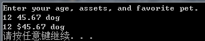
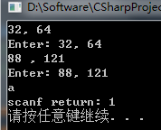
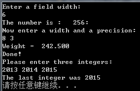

C语言—scanf_s()
作者：追风剑情 发布于：2019-7-20 21:36 分类：C
示例
//Visual Studio中加上这句才可以使用scanf()
//否则只能使用scanf_s()
#define _CRT_SECURE_NO_WARNINGS
//引入printf()、scanf_s()
#include <stdio.h>
#include <stdint.h>
//引入bool类型，C99标准新增
#include <stdbool.h>
//引入Sleep()
#include <windows.h>
//ANSI C之前的编译器不支持string.h
//一些ANSI之前的UNIX系统用strings.h代替string.h
//引入strlen()
#include <string.h>
int main(void)
{
char name[40];
printf("please enter name:\n");
//第三个参数代表最多读取多少个字符到name中
//scanf_s是微软提供的，比scanf更安全
//当读到第一个空格时即结束
scanf_s("%s", name, 40);
//sizeof()返回数组长度
//strlen()返回数组中有效字符数
printf("sizeof=%d, len=%d \n", sizeof(name), strlen(name));
fflush(stdin);//刷新输入缓冲区
fflush(stdout);//刷新输出缓冲区
int age=0;
printf("please enter age:\n");
scanf_s("%d", &age);
printf("name=%s, age=%d\n", name, age);
int num1, num2, num3;
scanf_s("%d %d %d", &num1, &num2, &num3);
printf("num1=%d, num2=%d, num3=%d \n", num1, num2, num3);
char str1[40];
char str2[40];
//连续读取字符串，字符数组后面必须指明要读取的个数
//输入多个字符串时用空格隔开.例如 abc def
//多个%s可以连续写，也可以用空格隔开
scanf_s("%s %s", str1, 40, str2, 40);
printf("str1=%s, str2=%s\n", str1, str2);
int num4;
char str3[40];
scanf_s("%s %d", str3, 40, &num4);
printf("str3=%s, num4=%d\n", str3, num4);
system("pause");
return 0;
}
运行测试
| ANSI C中scanf()的转换说明 | |
| scanf()函数所用的转换说明与printf()函数几乎相同。主要的区别是，对于float类型和double类型，printf()都使用%f、%e、%E、%g和%G转换说明。而scanf()只把它们用于float类型，对于double类型时要使用l修饰符。下表列出了C99标准中常用的转换说明。 | |
| 转换说明 | 含义 |
| %c | 把输入解释成字符 |
| %d | 把输入解释成有符号十进制整数 |
| %e、%f、%g、%a | 把输入解释成浮点数（C99标准新增了%a） |
| %E、%F、%G、%A | 把输入解释成浮点数（C99标准新增了%A） |
| %i | 把输入解释成有符号十进制整数 |
| %o | 把输入解释成有符号八进制整数 |
| %p | 把输入解释成指针（地址） |
| %s | 把输入解释成字符串。从第1个非空白字符开始，到下一个空白字符之前的所有字符都是输入 |
| %u | 把输入解释成无符号十进制整数 |
| %x、%X | 把输入解释成有符号十六进制整数 |
| scanf()转换说明中的修饰符 | |
| 使用转换说明比较复杂，而且这些表中还省略了一些特性。省略的主要特性是，从高度格式化源中读取选定数据，如穿孔卡或其他数据记录。 | |
| 转换说明 | 含义 |
| * |
抑制赋值 示例：“%*d” |
| 数字 |
最大字段宽度。输入达到最大字段宽度处，或第1次遇到空白字符时停止 示例：“%10s” |
| hh |
把整数作为signed char或unsigned char类型读取 示例：“%hhd”、"%hhu" |
| ll |
把整数作为long long或unsigned long long类型读取(C99) 示例：“%lld”、"%llu" |
| h、l或L |
“%hd”和"%hi"表明把对应的值储存为short int类型 "%ho"、"%hx"和"%hu"表明把对应的值储存为unsigned short int类型 “%ld”和"%li"表明把对应的值储存为long类型 "%lo"、"%lx"和"%lu"表明把对应的值储存为unsigned long类型 "%le"、"%lf"和"%lg"表明把对应的值储存为double类型 在e、f和g前面使用L而不是l，表明把对应的值被储存为long double类型。如果没有修饰符，d、i、o和x表明对应的值被储存为int类型，f和g表明把对应的值储存为float类型 |
| j |
在整型转换说明后面时，表明使用intmax_t或uintmax_t类型（C99） 示例："%zd"、"%zo" |
| z | 在整型转换说明后面时，表明使用sizeof的返回类型（C99） |
| t |
在整型转换说明后面时，表明使用表示两个指针差值的类型（C99） 示例：“%td”、"%tx" |
示例：读取字符串输入
//Visual Studio中加上这句才可以使用scanf()
//否则只能使用scanf_s()
#define _CRT_SECURE_NO_WARNINGS
#include <stdio.h>
//argc: 参数个数 argv[]: 参数数组
int main(int argc, char *argv[])
{
int age;
float assets;
char pet[30];//字符数组，用于储存字符串
pet[2] = '\0';
printf("Enter your age, assets, and favorite pet.\n");
//用户可以在一行或多行输入参数
//参数间需要用空白(换行符、制表符和空格)把输入分成多个字段
scanf_s("%d %f", &age, &assets);//这里要使用&
//scanf_s("%s", pet);//会输出乱码
scanf("%s", pet);//字符数组不使用&
printf("%d $%.2f %s\n", age, assets, pet);
//唯一例外的是%c转换说明，根据%c，scanf()会读取每个字符，包括空白。
system("pause");
return 0;
}
运行测试 
从scanf()角度看输入
假设scanf()根据一个%d转换说明读取一个整数。scanf()函数每次读取一个字符，路过所有空白字符，直至遇到第1个非空白字符才开始读取。因为要读取整数，所以scanf()希望发现一个数字字符或者一个符号（+或-）。如果找到一个数字或符号，它便保存该字符，并读取下一个字符。如果下一个字符是数字，它便保存该数字并读取下一个字符。scanf()不断地读取和保存字符，直到遇到非数字字符。如果遇到一个非数字字符，它便认为读到了整数的末尾。然后，scanf()把非数字字符放回输入。这意味着程序在下一次读取输入时，首先读到的是上一次读取丢弃的非数字字符。最后，scanf()计算已读取数字（可能还有符号）相应的数值，并将计算后的值放入指定的变量中。
如果使用字段宽度，scanf()会在字段结尾或第1个空白字符处停止读取（满足两个条件之一便停止）。
如果第1个非空白字符是A而不是数字，会发生什么情况呢？scanf()将停在那里，并把A放回输入中，不会把值赋给指定变量。程序在下一次读取输入时，首先读到的字符是A。如果程序只使用%d转换说明，scanf()就一直无法越过A读下一个字符。另外，如果使用带多个转换说明的scanf()，C规定在第1个出错处停止读取输入。
用其他数值匹配的转换说明读取输入和用%d的情况相同，区别在于scanf()会把更多字符识别成数字的一部分。例如，%x转换说明要求scanf()识别十六进制数a~f和A~F。浮点转换说明要求scanf()识别小数点、e记数法（指数记数法）和新增的p记数法（十六进制指数记数法）。
如果使用%s转换说明，scanf()会读取除空白以外的所有字符。scanf()路过空白开始读取第1个非空白字符，并保存非空白字符直到再次遇到空白。这意味着scanf()根据%s转换说明读取一个单词，即不包含空白字符的字符串。如果使用字段宽度，scanf()在字段末尾或第1个空白字符处停止读取。无法利用字段宽度让只有一个%s的scanf()读取多个单词。最后注意一点：当scanf()把字符串放进指定数组中时，它会在字符序列末尾加上'\0'，让数组中的内容成为一个C字符串。
实际上，在C语言中scanf()并不是最常用的输入函数，这里重点介绍它是因为它能读取不同类型的数据。C语言还有其他的输入函数，如getchar()和fgets()。这两个函数更适合处理一些特殊情况，如读取单个字符或包含空格的字符串。无论程序中需要读取整数、小数、字符还是字符串，都可以使用scanf()函数。
示例：格式字符串中的普通字符
//Visual Studio中加上这句才可以使用scanf()
//否则只能使用scanf_s()
#define _CRT_SECURE_NO_WARNINGS
#include <stdio.h>
//argc: 参数个数 argv[]: 参数数组
int main(int argc, char *argv[])
{
int n, m;
// 用户必须输入两个整数且用逗号隔开
// scanf()会跳过整数前面的空白
scanf("%d,%d", &n, &m);
printf("Enter: %d, %d\n", n, m);
scanf("%d ,%d", &n, &m);
printf("Enter: %d, %d\n", n, m);
// 除了%c，其他转换说明都会自动跳过待输入值前面所有的空白。
// scanf("%d%d", &n, &m)
// scanf("%d %d", &n, &m)
// 上面两句行为相同
// 对于%c，在格式字符串中添加一个空格字符会有所不同。
// 例如，如果把%c放在格式字符串中的空格前面，scanf()便会跳过空格，
// 从第1个非空白字符开始读取。也就是说，scanf("%c", &ch)从输入中的
// 第1个字符开始读取，而scanf(" %c", &ch)则从第1个非空白字符开始读取。
char ch;
// scanf返回成功读取的项数，检测到文件结尾，则返回EOF
// EOF是stdio.h中定义的特殊值，通常用#define指令把EOF定义为-1
// 可利用返回值来检测和处理不匹配的输入
int result = scanf(" %c", &ch);
printf("scanf return: %d\n", result);
system("pause");
return 0;
}
运行测试 
示例：printf()和scanf()的*修饰符
//Visual Studio中加上这句才可以使用scanf()
//否则只能使用scanf_s()
#define _CRT_SECURE_NO_WARNINGS
#include <stdio.h>
//argc: 参数个数 argv[]: 参数数组
int main(int argc, char *argv[])
{
/*
printf()和scanf()都可以使用*修饰符来修改转换说明的含义。但是，
它们的用法不太一样。
如果你不想预先指定字段宽度，希望通过程序来指定，
那么可以用*修饰符代替字段宽度。但还是要用一个参数告诉函数，
字段宽度应该是多少。也就是说，如果转换说明是%*d，那么参数
列表中应包含*和d对应的值。这个技巧也可用于浮点值指定精度和字段宽度。
*/
unsigned width, precision;
int number = 256;
double weight = 242.5;
/** 在printf()中使用* **/
printf("Enter a field width: \n");
scanf("%d", &width);
printf("The number is :%*d:\n", width, number);
printf("Now enter a width and a precision: \n");
scanf("%d %d", &width, &precision);
printf("Weight = %*.*f\n", width, precision, weight);
printf("Done!\n");
/** 在scanf()中使用* **/
/*
scanf()中把*放在%和转换字符之间时，会使得scanf()跳过相应的输入项。
在程序需要读取文件中特定列的内容时，这项跳过功能很有用。
*/
int n;
printf("Please enter three integers:\n");
scanf("%*d %*d %d", &n);
printf("The last integer was %d\n", n);
system("pause");
return 0;
}
运行测试 
标签: C语言
日历
最新文章
随机文章
热门文章
分类

存档
- 2022年2月(2)
- 2022年1月(8)
- 2021年12月(5)
- 2021年11月(3)
- 2021年10月(4)
- 2021年9月(9)
- 2021年8月(14)
- 2021年7月(8)
- 2021年6月(5)
- 2021年5月(2)
- 2021年4月(3)
- 2021年3月(7)
- 2021年2月(2)
- 2021年1月(8)
- 2020年12月(7)
- 2020年11月(2)
- 2020年10月(6)
- 2020年9月(9)
- 2020年8月(10)
- 2020年7月(9)
- 2020年6月(18)
- 2020年5月(4)
- 2020年4月(25)
- 2020年3月(38)
- 2020年1月(21)
- 2019年12月(13)
- 2019年11月(29)
- 2019年10月(44)
- 2019年9月(17)
- 2019年8月(18)
- 2019年7月(25)
- 2019年6月(25)
- 2019年5月(17)
- 2019年4月(10)
- 2019年3月(36)
- 2019年2月(35)
- 2019年1月(28)
- 2018年12月(30)
- 2018年11月(22)
- 2018年10月(4)
- 2018年9月(7)
- 2018年8月(13)
- 2018年7月(13)
- 2018年6月(6)
- 2018年5月(5)
- 2018年4月(13)
- 2018年3月(5)
- 2018年2月(3)
- 2018年1月(8)
- 2017年12月(35)
- 2017年11月(17)
- 2017年10月(16)
- 2017年9月(17)
- 2017年8月(20)
- 2017年7月(34)
- 2017年6月(17)
- 2017年5月(15)
- 2017年4月(32)
- 2017年3月(8)
- 2017年2月(2)
- 2017年1月(5)
- 2016年12月(14)
- 2016年11月(26)
- 2016年10月(12)
- 2016年9月(25)
- 2016年8月(32)
- 2016年7月(14)
- 2016年6月(21)
- 2016年5月(17)
- 2016年4月(13)
- 2016年3月(8)
- 2016年2月(8)
- 2016年1月(18)
- 2015年12月(13)
- 2015年11月(15)
- 2015年10月(12)
- 2015年9月(18)
- 2015年8月(21)
- 2015年7月(35)
- 2015年6月(13)
- 2015年5月(9)
- 2015年4月(4)
- 2015年3月(5)
- 2015年2月(4)
- 2015年1月(13)
- 2014年12月(7)
- 2014年11月(5)
- 2014年10月(4)
- 2014年9月(8)
- 2014年8月(16)
- 2014年7月(26)
- 2014年6月(22)
- 2014年5月(28)
- 2014年4月(15)
友情链接
- Unity官网
- Unity圣典
- Unity在线手册
- Unity中文手册(圣典)
- Unity官方中文论坛
- Unity游戏蛮牛用户文档
- Unity下载存档
- Unity引擎源码下载
- Unity服务
- Unity Ads
- wiki.unity3d
- Visual Studio Code官网
- SenseAR开发文档
- MSDN
- C# 参考
- C# 编程指南
- .NET Framework类库
- .NET 文档
- .NET 开发
- WPF官方文档
- uLua
- xLua
- SharpZipLib
- Protobuf-net
- Protobuf.js
- OpenSSL
- OPEN CASCADE
- JSON
- MessagePack
- C在线工具
- 9RIA天地会
- 游戏蛮牛
- GreenVPN
- 聚合数据
- 热云
- 融云
- 腾讯云
- 腾讯开放平台
- 腾讯游戏服务
- 腾讯游戏开发者平台
- 腾讯课堂
- 微信开放平台
- 腾讯实时音视频
- 腾讯即时通信IM
- 微信公众平台技术文档
- 白鹭引擎官网
- 白鹭引擎开放平台
- 白鹭引擎开发文档
- FairyGUI编辑器
- PureMVC-TypeScript
- 讯飞开放平台
- 亲加通讯云
- Cygwin
- Mono开发者联盟
- Scut游戏服务器引擎
- KBEngine游戏服务器引擎
- Photon游戏服务器引擎
- 码云
- SharpSvn
- 腾讯bugly
- 4399原创平台
- 开源中国
- Firebase
- Firebase-Admob-Unity
- google-services-unity
- Firebase SDK for Unity
- Google-Firebase-SDK
- AppsFlyer SDK
- android-repository
- CQASO
- Facebook开发者平台
- gradle下载
- GradleBuildTool下载
- Android Developers
- Google中国开发者
- AndroidDevTools
- Android社区
- Android开发工具
- Google Play Games Services
- Google商店
- Google APIs for Android
- 金钱豹VPN
- TouchSense SDK
- MakeHuman
- Online RSA Key Converter
- Windows UWP应用
- Visual Studio For Unity
- E时代IDC主机
- Open CASCADE Technology
- 慕课网
- 奇优广告联盟
- 阿里云服务器ECS
- 在线免费文字转语音系统
- AI Studio
- 网云穿
- 百度网盘开放平台
- 迅捷画图
- 菜鸟工具
- [CSDN] 程序员研修院
- 华为人脸识别
交流QQ群
-
Flash游戏设计: 86184192
Unity游戏设计: 171855449
游戏设计订阅号

捐赠 (用于支付服务器费用)
-
微信

支持宝

捐赠的朋友可与博主成为微信好友，点击下方【给我写信】给博主留言。